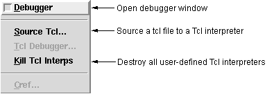

Selecting Debugger provides access to the GUI Debugger; this will be described in detail in Chapter 18([Using,the,ALS,IDE,Debugger]).
Source Tcl allows one to “source” a Tcl/Tk file into a user/program-defined Tcl interpreter; the dialog prompts you for the name of the interpreter.
Kill Tcl Interps destroys all user-defined Tcl/Tk interpreters.